Katalog produktów
Ponad 1000 produktów chemii technicznej — od własnej marki FRANZA po renomowane marki światowe. Wybierz kategorię, żeby zobaczyć szczegóły.
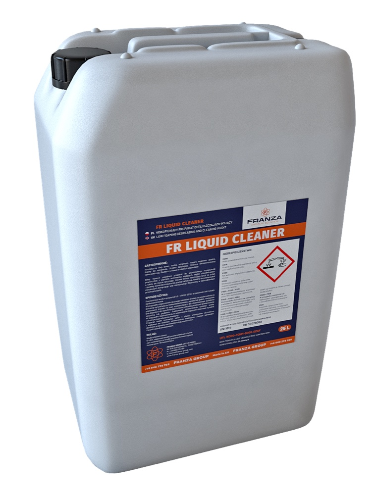
FR LIQUID CLEANER
Nisko pieniący preparat odtłuszczająco-myjący
Silny, wysoce zasadowy preparat do gruntownego czyszczenia powierzchni z użyciem automatów myjących, myjek ciśnieniowych, a także do mycia ręcznego. Usuwa tłusty, zaschnięty brud ze ścian i podłóg, olej, smar, sadzę, atrament, nagary — świetnie rozpuszcza żywicę tartaczną. Idealny do powierzchni metalowych (włączając stal nierdzewną). Skuteczny w zabrudzeniach przemysłowych. Łatwy do spłukania. Szybko działający. Wysoce skoncentrowany i ekonomiczny. Skuteczny nawet w niskich stężeniach.
Zapytaj o produkt →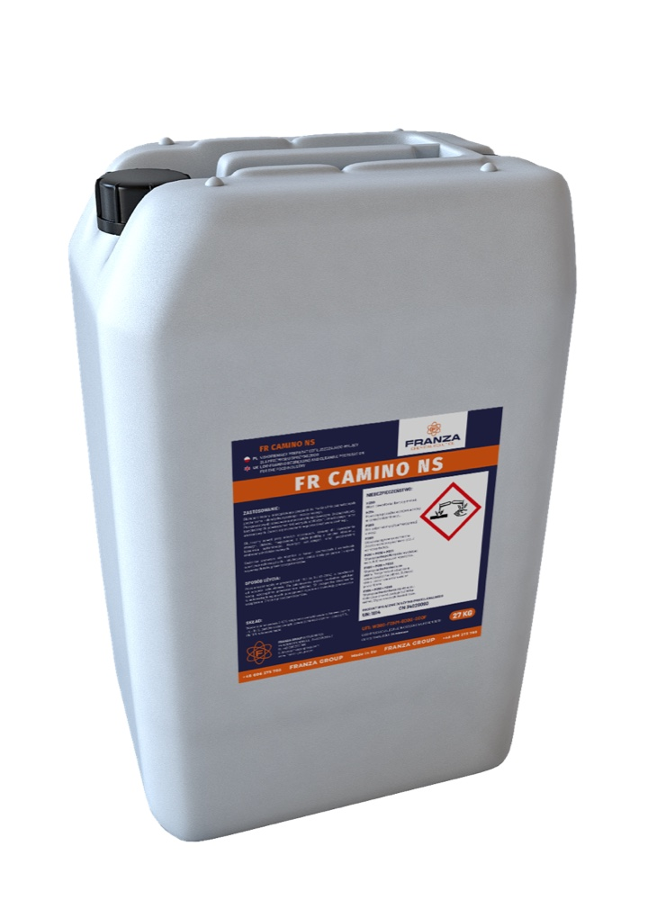
FR CAMINO NS
Nisko pieniący preparat odtłuszczająco-myjący do przemysłu spożywczego
Mocno skoncentrowany nisko pieniący preparat do ręcznego i maszynowego mycia silnie zabrudzonych powierzchni. Do stosowania w przemyśle spożywczym. Bezzapachowy. Nie uszkadza powierzchni niklowanych, stalowych, emaliowanych i aluminiowych. Stosować roztwór rozcieńczony w wodzie. Skuteczny nawet w niskich stężeniach. Do mycia maszyn, chłodni, magazynów, podłóg z betonu, klinkieru, kamienia naturalnego oraz materiałów syntetycznych, powierzchni malowanych, lakierowanych w zakładach spożywczych. Doskonały do mycia hal sportowych, ośrodków sportowo-rekreacyjnych, usuwa ślady po gumie i kleju stosowanym przez szczypiornistów.
Zapytaj o produkt →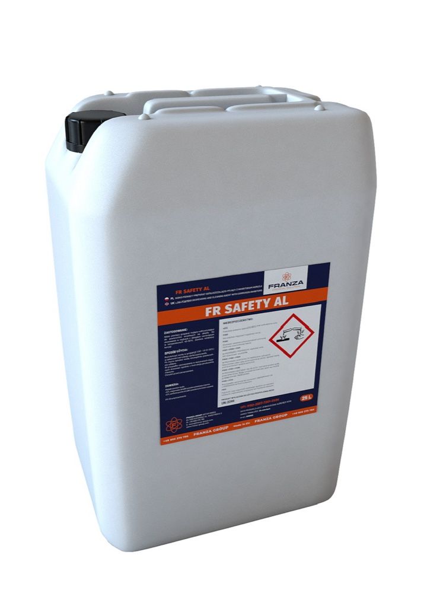
FR SAFETY AL
Nisko pieniący preparat myjący bezpieczny dla aluminium i metali lekkich
Silny, alkaliczny preparat do czyszczenia powierzchni wrażliwych. Do stosowania w myjkach z zamkniętym obiegiem płynu w temp. 40–80°C. Zawiera inhibitory korozji. Usuwa smary, nagary, tłuszcze zwierzęce i roślinne, sadzę i inne zanieczyszczenia przemysłowe. Idealny do metali lekkich, aluminiowych, cynku, tytanu itp. Szybko działający. Wysoce skoncentrowany i ekonomiczny (stężenia 2–5%).
Zapytaj o produkt →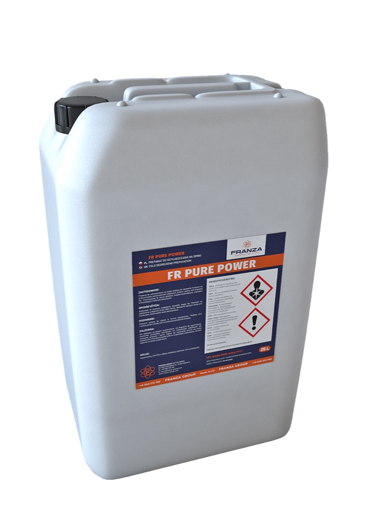
FR PURE POWER
Preparat do usuwania smoły i asfaltu na zimno
Silny odtłuszczacz „na zimno". Skutecznie czyści dzięki zawartości odpowiednich rozpuszczalników. Jest preparatem, który można używać w formie gotowej lub po rozcieńczeniu z wodą — wówczas gęstnieje, dzięki czemu dłużej utrzymuje się na czyszczonej powierzchni, a tym samym zwiększa się jego efektywność. Działa zarówno na suchych jak i mokrych powierzchniach. Może być spłukiwany wodą z dodatkiem środka alkalicznego.
Zapytaj o produkt →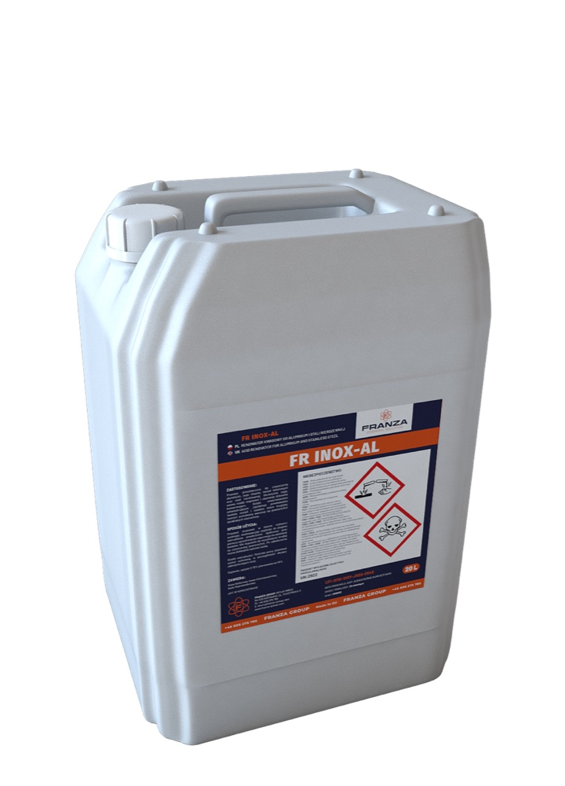
FR INOX-AL
Renowator kwasowy do aluminium
Antykorozyjny preparat do czyszczenia aluminium, jego stopów, metali lekkich oraz stali nierdzewnej. Posiada właściwości konserwujące, usuwa kamień, zaczyn cementowy i osady z kamienia. Mieszanka kwasów: fosforowego, solnego i fluorowodorowego. Znakomicie czyści zbiorniki paliw, burty, windy, węzły betoniarskie. Wytrawia po spawaniu. Zalecane stężenia 10%–30%.
Zapytaj o produkt →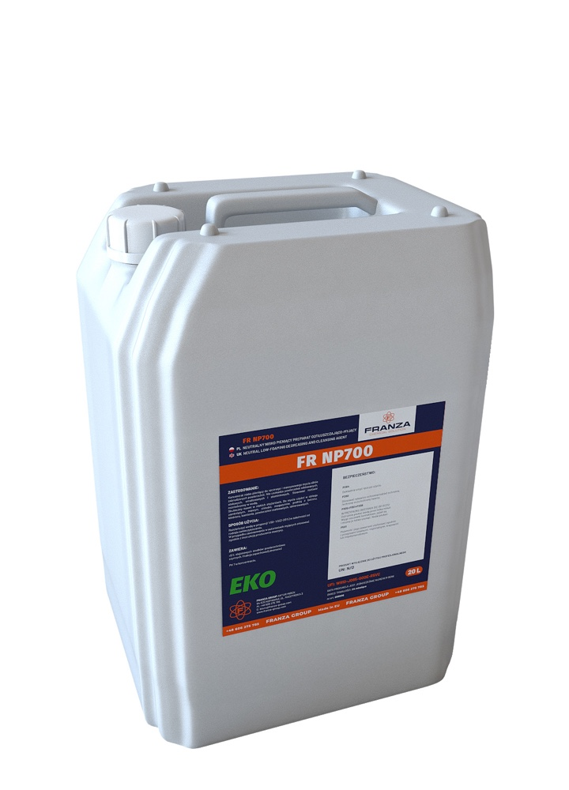
FR NP700
Koncentrat. Wodorozcieńczalny płyn do powierzchni przemysłowych i części mechanicznych. Neutralne pH
Skutecznie usuwa oleje, smary i osady. Nie działa korozyjnie na stal, nie uszkadza powierzchni — bezpieczny w stosowaniu. Związki powierzchniowe są biodegradowalne mając znikomy wpływ na środowisko — nadaje się do utylizacji w większości systemów ściekowych po rozcieńczeniu.
Zapytaj o produkt →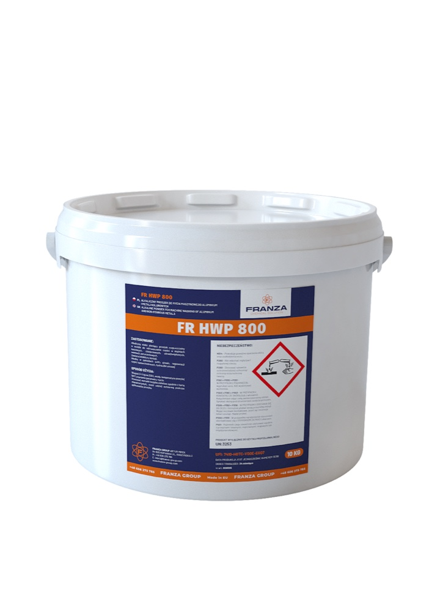
FR HWP 800
Alkaliczny proszek do mycia maszynowego aluminium i metali kolorowych
Przeznaczony jest do mycia przedmiotów i części metalowych, maszyn, urządzeń, silników, sprzętu rolniczego, podwozi pojazdów itp. Skutecznie usuwa takie zabrudzenia jak: tłuszcze, oleje, smary, chłodziwa, pasty polerskie, zanieczyszczenia mechaniczne. Efektywnie zastępuje mycie ropą, benzyną, naftą i rozpuszczalnikami oraz eliminuje odtłuszczanie elektrolityczne. Znakomity w myjniach ciśnieniowych i ultradźwiękowych. Mycie ręczne i zanurzeniowe — roztwór 2–3% zależnie od stopnia zabrudzenia. Mycie natryskowe — roztwór 0,5–3% w zależności od ciśnienia. Temperatura roztworu myjącego w zakresie 20–80°C.
Zapytaj o produkt →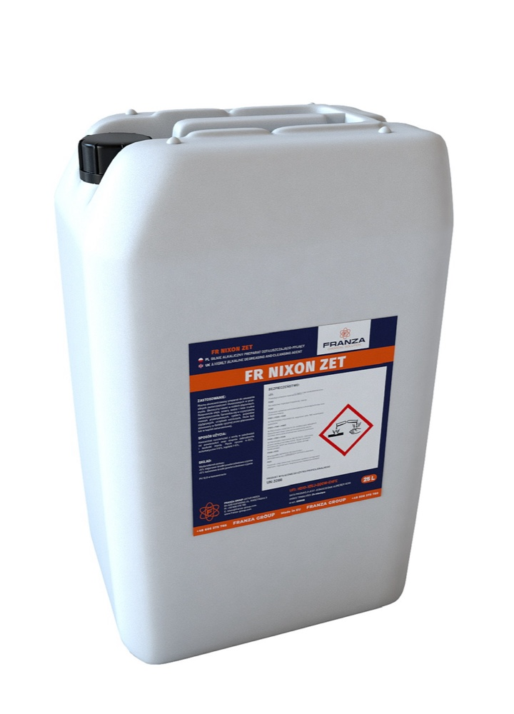
FR NIXON ZET
Alkaliczny średnio pieniący koncentrat do odtłuszczania w przemyśle
Umiarkowanie pieniący preparat o podwyższonej skuteczności rozpuszczania smarów, zanieczyszczeń drogowych i silnych zabrudzeń występujących w przemyśle ciężkim. Przeznaczony do czyszczenia cystern, wagonów kolejowych, siłowników hydraulicznych, maszyn itp. Stosowany wszędzie tam, gdzie występują najtrudniejsze do usunięcia zabrudzenia. Stosowany przy myciu ręcznym i ciśnieniowym. Doskonale sprawdza się w roli preparatu do sporządzania kąpieli odtłuszczających. pH 12,8 w koncentracie.
Zapytaj o produkt →FR BIOSTAR
Biodegradowalny alkaliczny preparat odtłuszczający
Uniwersalny, biodegradowalny preparat myjąco-odtłuszczający o wysokiej skuteczności działania. Przeznaczony jest do usuwania tłuszczów, olejów, sadzy, brudu ulicznego oraz soli drogowej z powierzchni takich jak elewacje, dachy, kostka brukowa i urządzenia przemysłowe. Preparat działa efektywnie nawet na wilgotnych powierzchniach, nie uszkadza tworzyw sztucznych i pozostawia połysk. Jest wysoko skoncentrowany i skuteczny już przy niskich stężeniach typu 1%. pH 13,1 w koncentracie.
Zapytaj o produkt →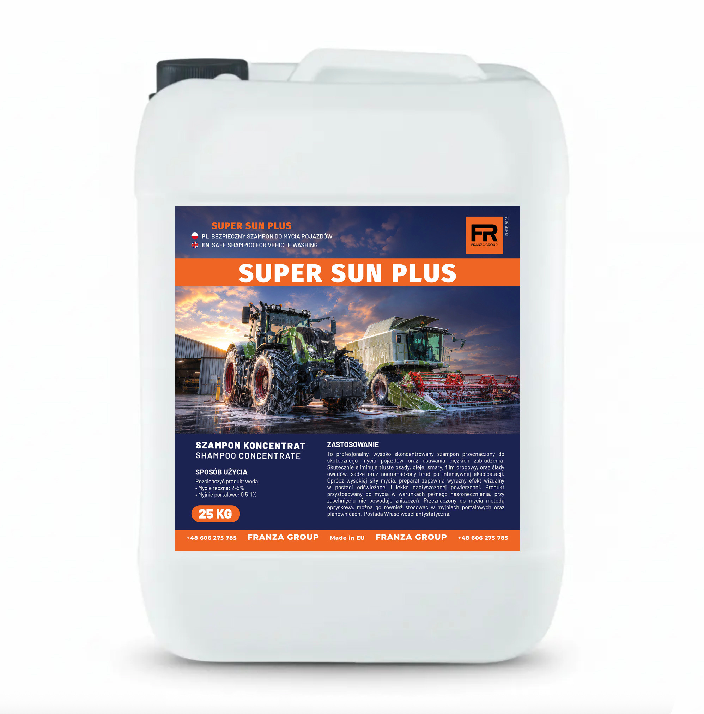
SUPER SUN PLUS
Bezpieczny szampon koncentrat do mycia pojazdów
Profesjonalny, wysoko skoncentrowany szampon przeznaczony do skutecznego mycia pojazdów oraz usuwania ciężkich zabrudzeń. Skutecznie eliminuje tłuste osady, oleje, smary, film drogowy oraz ślady owadów, sadzę i nagromadzony brud po intensywnej eksploatacji. Zapewnia wyraźny efekt wizualny — odświeżoną i lekko nabłyszczoną powierzchnię. Przystosowany do mycia w warunkach pełnego nasłonecznienia — przy zaschnięciu nie powoduje zniszczeń. Do mycia metodą natryskową, w myjniach portalowych oraz pianownicach. Posiada właściwości antystatyczne. Rozcieńczać wodą: mycie ręczne 2–5%, myjnie portalowe 0,5–1%.
Zapytaj o produkt →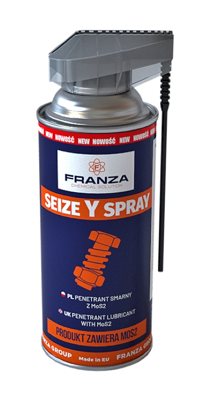
SEIZE Y SPRAY
Penetrant smarny z MoS₂ — Smarowanie, Konserwacja i Ochrona
Znakomicie penetrujący środek smarny z dodatkiem MoS₂ zapewniającym dodatkowe zabezpieczenie i zwiększenie właściwości smarnych. Rozluźnia zapieczone śruby, nakrętki i zamocowania, chroni przed korozją. Idealny m.in. do przewodów wysokiego napięcia. Nie zawiera silikonu — odpowiedni dla powierzchni lakierowanych i gumowych.
Zapytaj o produkt →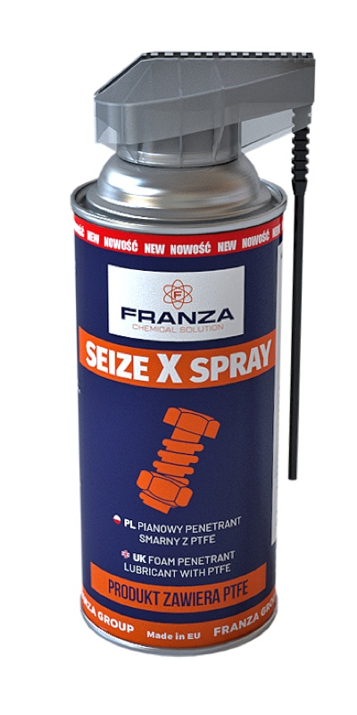
SEIZE X SPRAY
Penetrujący smar z PTFE — Smarowanie, Penetracja i Ochrona antykorozyjna
Znakomicie penetrujący środek smarny z dodatkiem PTFE zapewniającym dodatkowe zabezpieczenie i zwiększenie właściwości smarnych. Rozluźnia zapieczone śruby, nakrętki i zamocowania, chroni przed korozją, utlenianiem, chroni układy elektryczne i poprawia ich trwałość.
Zapytaj o produkt →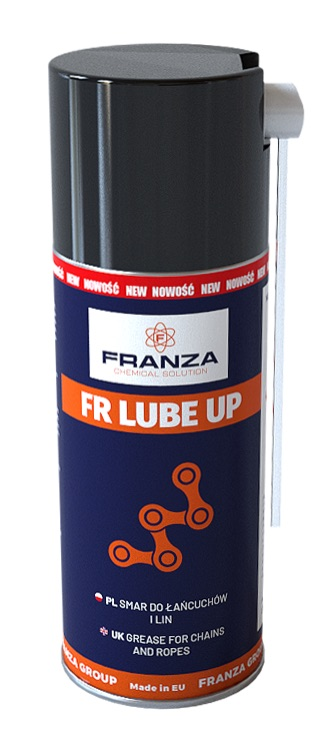
FR LUBE UP
Smar do lin i łańcuchów z dodatkiem oleju PetroCanada
Preparat do wszystkich rodzajów łańcuchów, prowadnic, lin, łożysk wolnoobrotowych oraz do smarowania haków i suwnic. Do stosowania wszędzie, gdzie jest wymagana adhezja preparatu do powierzchni w maszynach i urządzeniach przemysłowych. Gotowy do użycia w środowisku wilgotnym. Zakres temperatur od −5 do +200°C.
Zapytaj o produkt →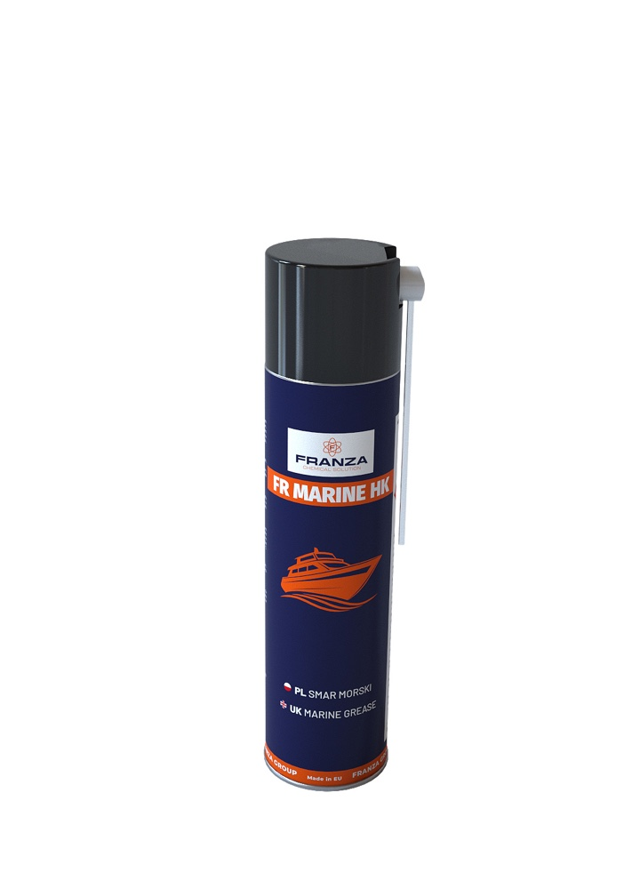
FR MARINE HK
Smar morski
Smar odporny na wodę i parę wodną, do pracy pod wysokim ciśnieniem i w bardzo trudnych warunkach agresywnych. Bez silikonów. Preparat do wysoko obciążonych łożysk wolnoobrotowych, tocznych, ślizgowych, kulkowych, rolkowych, elementów obciążonych, przewodów, przekładni zębatych, łańcuchów, prowadnic, ślizgów, zaworów. Do przemysłu papierniczego, stoczniowego, hydraulicznego, morskiego. Chroni przed korozją, nie ulega wymywaniu. Może pracować całkowicie zanurzony w wodzie. Zakres temperatur od −20 do +130°C.
Zapytaj o produkt →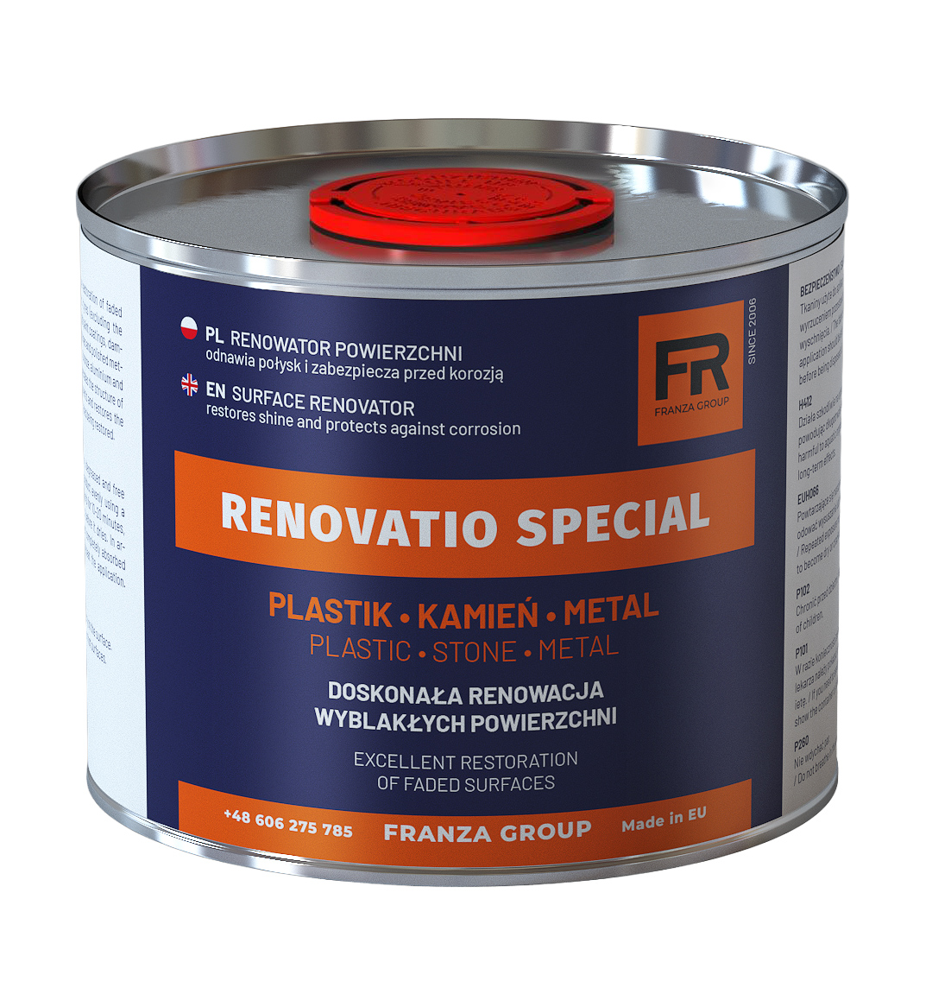
RENOVATIO SPECIAL
Renowator powierzchni — odnawia połysk i zabezpiecza przed korozją
Doskonała renowacja wyblakłych powierzchni z plastiku, kamienia i metalu. Renowator przywraca głębię koloru i połysk, jednocześnie tworząc powłokę zabezpieczającą przed korozją. Idealny do odświeżania elementów z tworzyw sztucznych, powierzchni kamiennych oraz metalowych, które utraciły swój pierwotny wygląd. Prosty w aplikacji — nanieść na czystą i suchą powierzchnię, a następnie rozprowadzić. Przywraca estetyczny wygląd i przedłuża żywotność odnawianych powierzchni.
Zapytaj o produkt →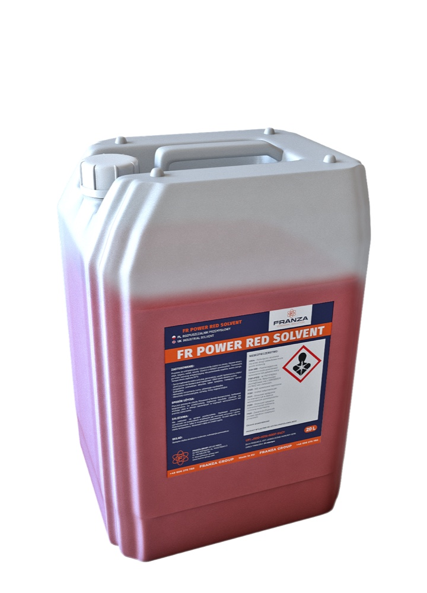
FR POWER RED SOLVENT
Rozpuszczalnik przemysłowy na zimno do myjni ręcznych
Preparat do odtłuszczania i czyszczenia części na zimno. Usuwa smary, oleje, smołę, wosk, pozostałości parafiny, asfaltu, klejów, tłuszczu itp. Myje części mechaniczne oraz części elektryczne, pozostawiając warstwę antykorozyjną. Temperatura zapłonu >63°C. Wytrzymałość dielektryczna >25 000 V. Najlepiej sprawdza się w myjniach warsztatowych ręcznych bez podgrzewania. Aplikować można na wiele sposobów — ręcznie, poprzez zamoczenie lub natryskiwać za pomocą rozpylaczy.
Zapytaj o produkt →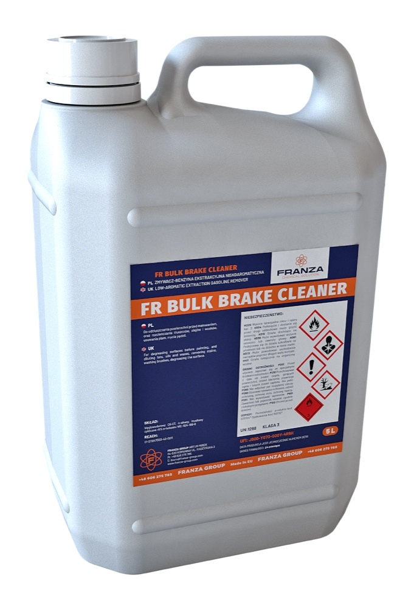
BULK BRAKE CLEANER
Rozcieńczalnik — benzyna ekstrakcyjna niskoaromatyczna
Do odtłuszczania przed malowaniem. Do rozcieńczania tłuszczów, olejów, smarów, usuwania plam, czyszczenia pędzli. Do mycia części metalowych podczas prac remontowych.
Zapytaj o produkt →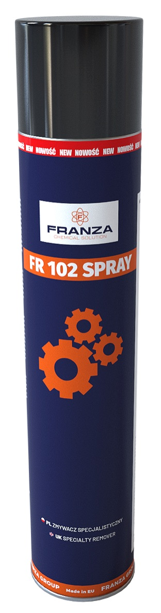
FR 102 SPRAY
Zmywacz specjalistyczny o przyjemnym zapachu
Rozpuszcza stwardniałe smary, osady, stare warstwy klejów, woski, oleje, smołę i inne zanieczyszczenia, nie wchodząc w reakcję z powierzchnią. Zawiera nieagresywne składniki w stosunku do delikatnych powierzchni. Zastosowana mieszanina związków organicznych i rozpuszczalników pozwala na skuteczne usuwanie zanieczyszczeń przemysłowych. Nadaje się do czyszczenia obudów sprzętu elektronicznego, AGD, desek rozdzielczych, tapicerki w pojazdach, łodziach, samolotach. Nie zostawia plam i nalotów. Pozostawia przyjemny zapach. Spray zapewnia ekonomiczne wykorzystanie i jednakowe, niezmienne działanie przez cały czas użytkowania.
Zapytaj o produkt →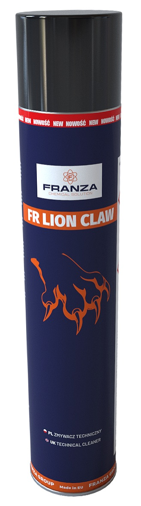
FR LION CLAW
Zmywacz techniczny
Preparat jako unikalna mieszanina rozpuszczalników bez chlorowych do zmywania chemikaliów trudnych do usunięcia. Rozpuszcza kleje, osady, woski, oleje, stare smary (naturalne i syntetyczne — w tym silikonowe). Zmywa farbę drukarską. Nieodzowny w pracach konserwacyjnych.
Zapytaj o produkt →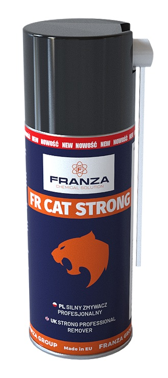
CAT STRONG
Bardzo mocny zmywacz
Mieszanina silnych rozpuszczalników do odtłuszczania i zmywania zanieczyszczeń z powierzchni metalowych, szklanych, drewnianych, kamiennych. Bezchlorowy środek chemiczny w aerozolu do szybkiego czyszczenia (odtłuszczania) powierzchni. Zawiera składniki, które rozpuszczają stwardniałe smary, osady, stare warstwy klejów CA i anaerobowych, woski, oleje i inne zanieczyszczenia. Produkt dostępny również w 5 L kanistrze.
Zapytaj o produkt →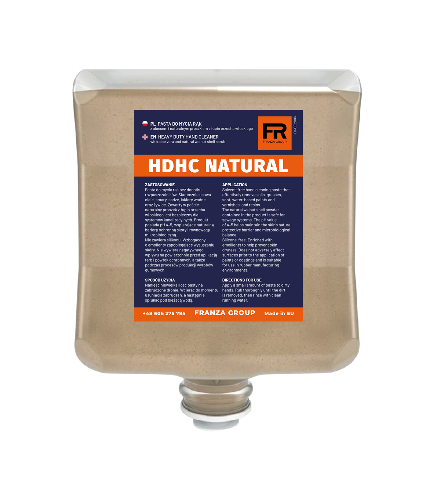
HDHC NATURAL
Pasta do mycia rąk z aloesem i naturalnym proszkiem z łupin orzecha włoskiego
Pasta do mycia rąk bez dodatku rozpuszczalników. Skutecznie usuwa oleje, smary, sadzę, lakiery wodne oraz żywice. Zawarty w paście naturalny proszek z łupin orzecha włoskiego jest bezpieczny dla systemów kanalizacyjnych. Produkt posiada pH 4–5, wspierające naturalną barierę ochronną skóry i równowagę mikrobiologiczną. Nie zawiera silikonu. Wzbogacony o emolienty zapobiegające wysuszaniu skóry — dzięki czemu może być stosowany bardzo często.
Zapytaj o produkt →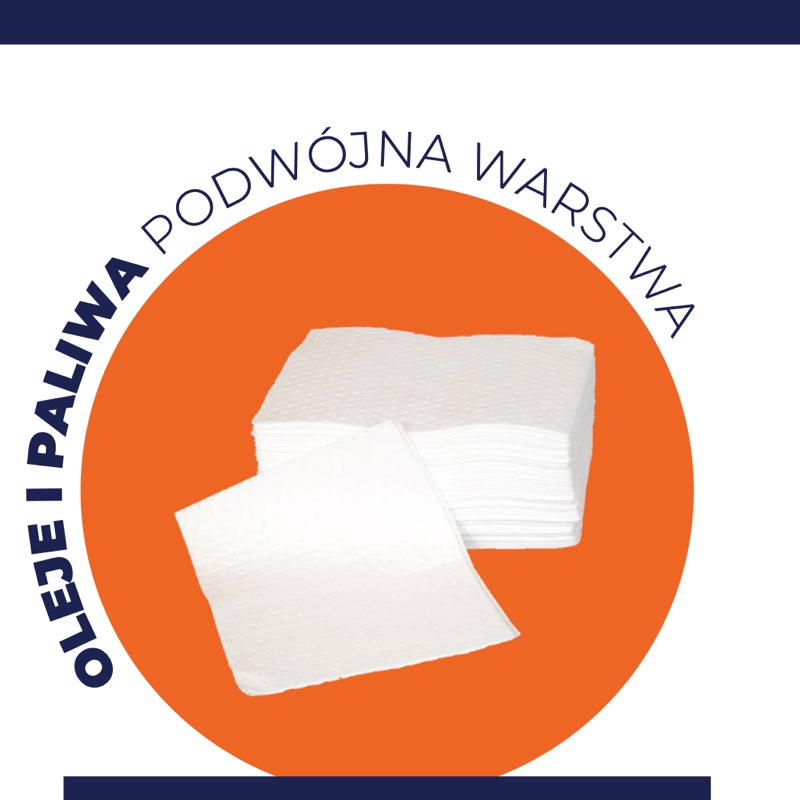
SPILL MAT PREMIUM O&G
Mata absorpcyjna do olejów i benzyny
Hydrofobowa — wypiera wodę. Arkusze sorbentowe do olejów i paliw, w wersji Premium dwuwarstwowe o gramaturze 300 g/m². Absorbują do 18-krotności swojej wagi (81–112 L). Antyelektrostatyczne i niepalne. Wymiary 40 × 50 cm, 100 mat w opakowaniu, 99% polipropylen.
Zapytaj o produkt →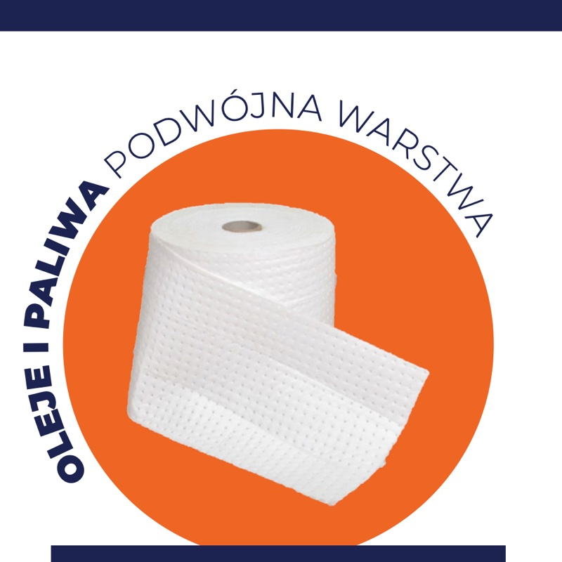
SPILL ROLL PREMIUM O&G 44 M × 50 CM
Mata absorpcyjna do olejów i benzyny w rolce
Hydrofobowa — wypiera wodę. Sorbent w rolce 50 cm × 44 m z perforacją co 25 cm umożliwiającą stosowanie dowolnych formatów. Absorbcja 91–124 L olejów i paliw. Wyprodukowane metodą MELTBLOWN, zgrzewane ultradźwiękowo. 99% polipropylen, gramatura 300 g/m². Powierzchnia całkowita 22 m². Idealne do zabezpieczania dużych powierzchni.
Zapytaj o produkt →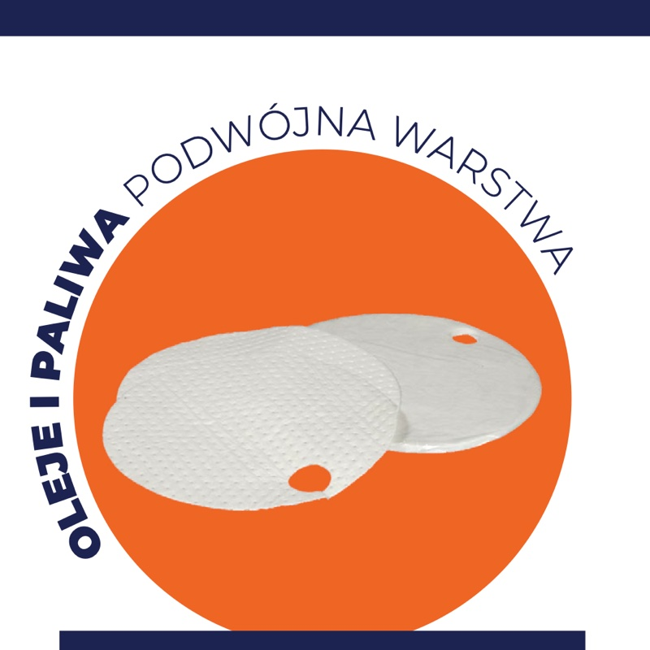
SPILL MAT FOR 210 L BARREL PREMIUM O&G
Nakładka absorpcyjna na beczkę 210 litrów
Zastosowanie: oleje i benzyny. Okrągłe maty sorbentowe o średnicy 55 cm, dopasowane do beczek 210 L. 25 mat w opakowaniu, waga netto 1,8 kg. Absorbcja do 25 L cieczy ropopochodnych. Hydrofobowe — wypierają wodę. Antyelektrostatyczne i niepalne. Idealne jako zabezpieczenie miejsc składowania olejów i paliw.
Zapytaj o produkt →